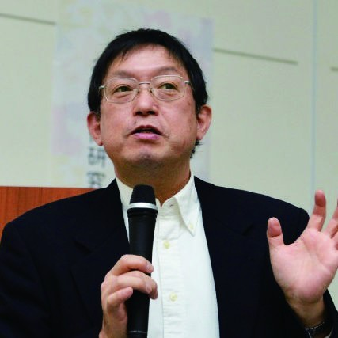
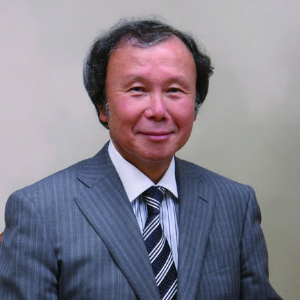
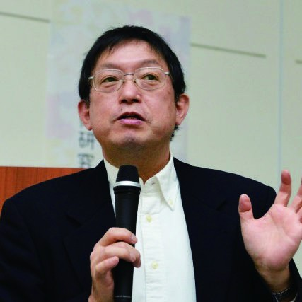
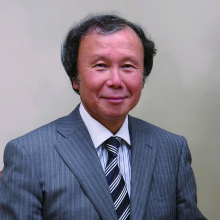

新型コロナウイルス感染拡大の影響は、働き方やライフスタイルなど、今後も様々な形で影響を及ぼし続けると考えられます。このことは、敦賀市内における、新幹線開業を見据えた受け皿づくり・まちづくりについても、今一度、様々な角度から検討し、以前はできなかった新たな発想と可能性を考える機会となりました。
本シンポジウムは、全国で起こっているムーブメントや、新たな観点などの見識を深め、「誘客」「稼ぐ力」「魅力」「関係人口」等の拡大に向けて、皆様とともに考えながら、新幹線開業に向けて、官民が一丸となって盛り上がっていこうとするものです。
実施内容
- 日 時：２０２０年１０月３１日（土） １４時～１７時
- 会 場：プラザ萬象 大ホール（敦賀市東洋町１番１号）
- 参加費：無料
- 定 員：２００名
- 対象者：関係者（市内事業者・各団体等）及び 一般参加者
当日のプログラム(予定)
14:00～14:10 開会挨拶14:10～14:50 基調講演「コロナ時代にライフスタイル／ワークスタイルはどう変わるか」講師：佐々木 俊尚 氏登壇者プロフィール 作家・ジャーナリスト佐々木俊尚氏兵庫県出身。毎日新聞社などを経て２００３年に独立し、テクノロジーから政治、経済、社会、ライフスタイルにいたるまで幅広く取材・執筆・発信している。総務省情報通信白書編集委員。「時間とテクノロジー」「そして、暮らしは共同体になる。」「キュレーションの時代」など著書多数。Twitterのフォロワーは約７８万人。14:50～15:00 休憩15:00～17:00 パネルディスカッション (※)テーマ ：「withコロナ時代に、都市と地方の関係はこう変わる！そこから見えてくる敦賀のリアルなビジョン」パネリスト ：櫛引 素夫 氏、長嶋 修 氏、高木 信平 氏、松尾 たいこ 氏、奥井 隆 氏登壇者プロフィール株式会社ニューピース代表取締役社長 高木新平氏富山県出身。早稲田大学卒業後、博報堂に入社。SNSを起点としたソーシャルキャンペーンに携わった後、独立。独自のビジョンを掲げて一気通貫したアクションを展開していくことで共感の輪を拡げる「Visioning」を提唱。インターネット選挙運動解禁を実現した「One VoiceCampaign」や、シェアリングエコノミーの浸透に貢献した「シェアリングエコノミー協会」などを立ち上げる。その後、様々な官公庁のクリエイティブディレクションを担当。最近では、SDGs・人生１００年時代などの次世代ビジョンの社会浸透を仕掛ける。青森大学 社会学部社会学科教授 櫛引素夫氏青森県青森市出身。東北大学大学院理学研究科を修了後、東奥日報に入社。入社以降、メディア情報部、八戸支社、政経部などを経て、政経部付編集委員となる。この間、弘前大学大学院地域社会研究科修了。その後、２０１３年に青森大へ移る。現在、整備新幹線に関わる研究のほか、空き家問題、地域コミュニティ、防災などに関する研究を行っている。アーティスト／イラストレーター松尾たいこ氏広島県呉市出身。約１０年間の自動車メーカー勤務を経て上京、イラストレーターに転身。手がけた本の表紙は３００冊を超える。江國香織や角田光代との共著やエッセイも出版。最新作は絵本「きっとそこにいるから」（集英社）。２０１４年からは福井にて「千年陶画」プロジェクトスタート。現在、佐々木俊尚の妻として、佐々木氏とともに、東京・軽井沢・福井の三拠点で生活中。株式会社 さくら事務所 会長、不動産コンサルタント長嶋修氏東京都墨田区出身。１９９９年、業界初の個人向け不動産コンサルティング会社「株式会社さくら事務所」を設立。「中立な不動産コンサルタント」としてマイホーム購入・不動産投資など不動産購入ノウハウや、業界・政策への提言を行う。著書・メディア出演多数。新幹線敦賀開業まちづくり推進会議会長 奥井隆(敦賀商工会議所副会頭)福井県敦賀市出身。立教大学卒業後、株式会社奥井海生堂に入社し、平成７年同社代表取締役に就任。株式会社奥井海生堂は、明治４年に創業し、大本山永平寺、大本山総持寺をはじめ、全国の寺院の精進料理の昆布を扱っている。北大路魯山人をはじめ、全国の名だたる料理人の信頼を得る老舗昆布商である同社としての暖簾を守っている。また、福井の食文化の継承と発展を目指す為に立ち上げた「（一社）福井県ガストロノミー協会」の会長も務めている。ファシリテーター ：佐々木 俊尚 氏17:00 終了
作家・ジャーナリスト佐々木俊尚氏兵庫県出身。毎日新聞社などを経て２００３年に独立し、テクノロジーから政治、経済、社会、ライフスタイルにいたるまで幅広く取材・執筆・発信している。総務省情報通信白書編集委員。「時間とテクノロジー」「そして、暮らしは共同体になる。」「キュレーションの時代」など著書多数。Twitterのフォロワーは約７８万人。14:50～15:00 休憩15:00～17:00 パネルディスカッション (※)テーマ ：「withコロナ時代に、都市と地方の関係はこう変わる！そこから見えてくる敦賀のリアルなビジョン」パネリスト ：櫛引 素夫 氏、長嶋 修 氏、高木 信平 氏、松尾 たいこ 氏、奥井 隆 氏登壇者プロフィール株式会社ニューピース代表取締役社長 高木新平氏富山県出身。早稲田大学卒業後、博報堂に入社。SNSを起点としたソーシャルキャンペーンに携わった後、独立。独自のビジョンを掲げて一気通貫したアクションを展開していくことで共感の輪を拡げる「Visioning」を提唱。インターネット選挙運動解禁を実現した「One VoiceCampaign」や、シェアリングエコノミーの浸透に貢献した「シェアリングエコノミー協会」などを立ち上げる。その後、様々な官公庁のクリエイティブディレクションを担当。最近では、SDGs・人生１００年時代などの次世代ビジョンの社会浸透を仕掛ける。青森大学 社会学部社会学科教授 櫛引素夫氏青森県青森市出身。東北大学大学院理学研究科を修了後、東奥日報に入社。入社以降、メディア情報部、八戸支社、政経部などを経て、政経部付編集委員となる。この間、弘前大学大学院地域社会研究科修了。その後、２０１３年に青森大へ移る。現在、整備新幹線に関わる研究のほか、空き家問題、地域コミュニティ、防災などに関する研究を行っている。アーティスト／イラストレーター松尾たいこ氏広島県呉市出身。約１０年間の自動車メーカー勤務を経て上京、イラストレーターに転身。手がけた本の表紙は３００冊を超える。江國香織や角田光代との共著やエッセイも出版。最新作は絵本「きっとそこにいるから」（集英社）。２０１４年からは福井にて「千年陶画」プロジェクトスタート。現在、佐々木俊尚の妻として、佐々木氏とともに、東京・軽井沢・福井の三拠点で生活中。株式会社 さくら事務所 会長、不動産コンサルタント長嶋修氏東京都墨田区出身。１９９９年、業界初の個人向け不動産コンサルティング会社「株式会社さくら事務所」を設立。「中立な不動産コンサルタント」としてマイホーム購入・不動産投資など不動産購入ノウハウや、業界・政策への提言を行う。著書・メディア出演多数。新幹線敦賀開業まちづくり推進会議会長 奥井隆(敦賀商工会議所副会頭)福井県敦賀市出身。立教大学卒業後、株式会社奥井海生堂に入社し、平成７年同社代表取締役に就任。株式会社奥井海生堂は、明治４年に創業し、大本山永平寺、大本山総持寺をはじめ、全国の寺院の精進料理の昆布を扱っている。北大路魯山人をはじめ、全国の名だたる料理人の信頼を得る老舗昆布商である同社としての暖簾を守っている。また、福井の食文化の継承と発展を目指す為に立ち上げた「（一社）福井県ガストロノミー協会」の会長も務めている。ファシリテーター ：佐々木 俊尚 氏17:00 終了
お問い合わせ
主催：敦賀商工会議所・新幹線敦賀開業まちづくり推進会議
共催：敦賀市・（一社）敦賀観光協会・港都つるが㈱・NPO法人THAP
協力：NEWPEACE Inc.
≪お問合せ先：敦賀商工会議所TEL.0770-22-2611≫